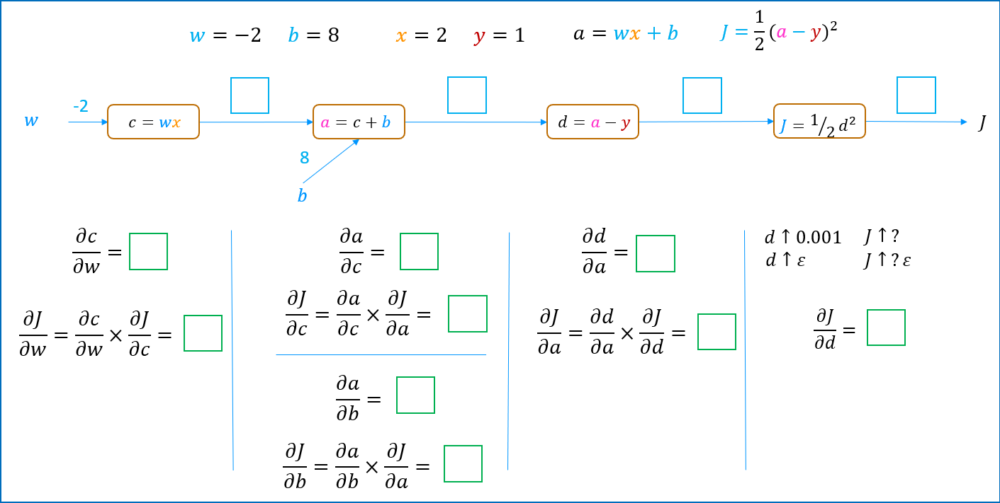

Backpropagation & tối ưu hoá
Mạng có hàng triệu tham số. Làm sao tính đạo hàm của chi phí theo từng tham số một cách hiệu quả? Câu trả lời: quy tắc chuỗi, đi ngược từ phải sang trái.
Đạo hàm — nhắc lại nhanh
Lab Derivatives định nghĩa đạo hàm một cách không hình thức: nếu \(w\) tăng một lượng rất nhỏ \(\varepsilon\) làm \(J\) tăng \(k\varepsilon\), thì \(\frac{\partial J}{\partial w} = k\).
J = (3)**2 # J = w^2 tại w = 3
J_eps = (3 + 0.001)**2
k = (J_eps - J) / 0.001 # ≈ 6.001 → dJ/dw = 2w = 6Lab dùng thư viện SymPy để tính đạo hàm ký hiệu và so sánh:
from sympy import symbols, diff
J, w = symbols('J, w')
J = w**2
dJ_dw = diff(J, w) # 2*w
dJ_dw.subs([(w, 3)]) # 6| \(J\) | \(\partial J/\partial w\) |
|---|---|
| \(w^2\) | \(2w\) |
| \(2w\) | \(2\) |
| \(w^3\) | \(3w^2\) |
| \(1/w\) | \(-1/w^2\) |
| \(1/w^2\) | \(-2/w^3\) |
Đồ thị tính toán (computation graph)
Chia một biểu thức phức tạp thành các bước nhỏ, mỗi nút một phép tính. Ví dụ trong lab: \(J = (2 + 3w)^2\) với \(w = 3\).
Lan truyền ngược: đi từ phải sang trái, mỗi nút chỉ cần biết đạo hàm cục bộ của nó.
- \(\frac{\partial J}{\partial a} = 2a = 22\)
- \(\frac{\partial a}{\partial w} = 3\)
- Quy tắc chuỗi: \(\frac{\partial J}{\partial w} = \frac{\partial a}{\partial w}\cdot\frac{\partial J}{\partial a} = 3 \times 22 = 66\)
Trực giác: \(w\) tăng một chút → \(a\) tăng gấp 3 lượng đó → \(J\) tăng gấp 22 lượng thay đổi của \(a\). Tổng cộng \(J\) nhạy gấp 66 lần.
Một mạng nơ-ron nhỏ

Với \(x = 2, w = -2, b = 8, y = 1\):
| Bước | Forward | Backward |
|---|---|---|
| \(c = wx\) | \(c = -4\) | \(\frac{\partial J}{\partial w} = \frac{\partial J}{\partial c}\cdot x = 3 \cdot 2 = 6\) |
| \(a = c + b\) | \(a = 4\) | \(\frac{\partial J}{\partial c} = \frac{\partial J}{\partial b} = \frac{\partial J}{\partial a} = 3\) |
| \(d = a - y\) | \(d = 3\) | \(\frac{\partial J}{\partial a} = \frac{\partial J}{\partial d} = 3\) |
| \(J = \frac{1}{2}d^2\) | \(J = 4.5\) | \(\frac{\partial J}{\partial d} = d = 3\) |
Với \(N\) nút và \(P\) tham số, tính đạo hàm từng tham số bằng sai phân (tăng mỗi tham số một chút rồi chạy lại cả mạng) tốn khoảng \(N \times P\) bước. Backprop chỉ cần khoảng \(N + P\) bước: một lượt forward và một lượt backward, tái sử dụng các đạo hàm trung gian. Với \(N = 10^4\), \(P = 10^5\): \(10^9\) so với \(1.1\times 10^5\) bước — nhanh hơn ~10.000 lần.
Backprop cho mạng nhiều lớp (dạng ma trận)
Với mạng dense, ký hiệu \(\delta^{[l]} = \partial J / \partial \mathbf{Z}^{[l]}\). Với đầu ra sigmoid + log loss (hoặc softmax + cross-entropy), lớp cuối có dạng đẹp quen thuộc:
(\(\odot\) là nhân từng phần tử; với ReLU, \(g'(z) = 1\) nếu \(z > 0\), ngược lại 0.)
Cài đặt NumPy cho mạng 2 lớp (bấm để xem)
def train_step(X, Y, W1, b1, W2, b2, alpha):
m = X.shape[0]
# forward
Z1 = X @ W1 + b1; A1 = np.maximum(0, Z1) # ReLU
Z2 = A1 @ W2 + b2; A2 = 1 / (1 + np.exp(-Z2)) # sigmoid
# backward
dZ2 = A2 - Y # (m, 1)
dW2 = A1.T @ dZ2 / m; db2 = dZ2.mean(axis=0)
dZ1 = (dZ2 @ W2.T) * (Z1 > 0) # (m, h)
dW1 = X.T @ dZ1 / m; db1 = dZ1.mean(axis=0)
# cập nhật
W1 -= alpha * dW1; b1 -= alpha * db1
W2 -= alpha * dW2; b2 -= alpha * db2
return W1, b1, W2, b2Trong thực tế, TensorFlow và PyTorch làm việc này tự động bằng automatic differentiation (autodiff): chúng ghi lại đồ thị tính toán khi chạy forward rồi tự động tính backward.
w = tf.Variable(3.0)
with tf.GradientTape() as tape:
J = (2 + 3 * w) ** 2
dJ_dw = tape.gradient(J, w) # 66.0Chính GradientTape này được dùng trong vòng huấn luyện tuỳ chỉnh của hệ gợi ý (chương 16) và Deep Q-Learning (chương 17).
Thuật toán tối ưu Adam
Gradient descent dùng một α cố định cho mọi tham số. Adam (Adaptive Moment estimation) điều chỉnh α riêng cho từng tham số:
- Nếu một tham số liên tục đi cùng một hướng → tăng bước để đi nhanh hơn.
- Nếu tham số dao động qua lại → giảm bước để ổn định.
Mặc định \(\beta_1 = 0.9, \beta_2 = 0.999\). \(\hat{\mathbf m}, \hat{\mathbf v}\) là bản đã hiệu chỉnh độ lệch ở những bước đầu. Trong Keras: tf.keras.optimizers.Adam(learning_rate=1e-3).
- Vanishing / exploding gradient: nhân nhiều đạo hàm qua nhiều lớp khiến gradient nhỏ dần về 0 hoặc lớn vô hạn. Giải pháp: ReLU, khởi tạo He/Xavier, batch normalization, kết nối tắt (residual connection như ResNet), gradient clipping.
- Learning rate schedule: giảm α dần theo thời gian (step decay, cosine decay), hoặc tăng dần ở đầu (warmup) — gần như bắt buộc khi huấn luyện Transformer.
- Các optimizer khác: SGD + momentum (vẫn rất mạnh cho thị giác máy tính), RMSProp, AdamW (Adam + weight decay tách rời — chuẩn cho LLM).
- Batch size: batch lớn → gradient ít nhiễu, tận dụng GPU tốt; batch nhỏ → nhiễu nhiều hơn, đôi khi tổng quát hoá tốt hơn.
Ghi nhớ
- Backprop = quy tắc chuỗi áp dụng có hệ thống trên đồ thị tính toán, từ đầu ra về đầu vào.
- Chi phí ~ N + P bước thay vì N × P — đó là lý do huấn luyện được mạng hàng tỉ tham số.
- Adam tự điều chỉnh learning rate cho từng tham số; là lựa chọn mặc định tốt.
Tự kiểm tra
J = (2 + 3w)² tại w = 1. Tính ∂J/∂w.
\(a = 5\), \(\partial J/\partial a = 10\), \(\partial a/\partial w = 3\) → \(30\).
Trong backprop, vì sao phải lưu lại các giá trị trung gian từ lượt forward?
Vì đạo hàm cục bộ cần chúng: ví dụ \(\partial J/\partial w = \partial J/\partial c \cdot x\) cần biết \(x\); \(g'(Z)\) cần biết \(Z\). Đây cũng là lý do huấn luyện tốn bộ nhớ hơn suy luận nhiều.